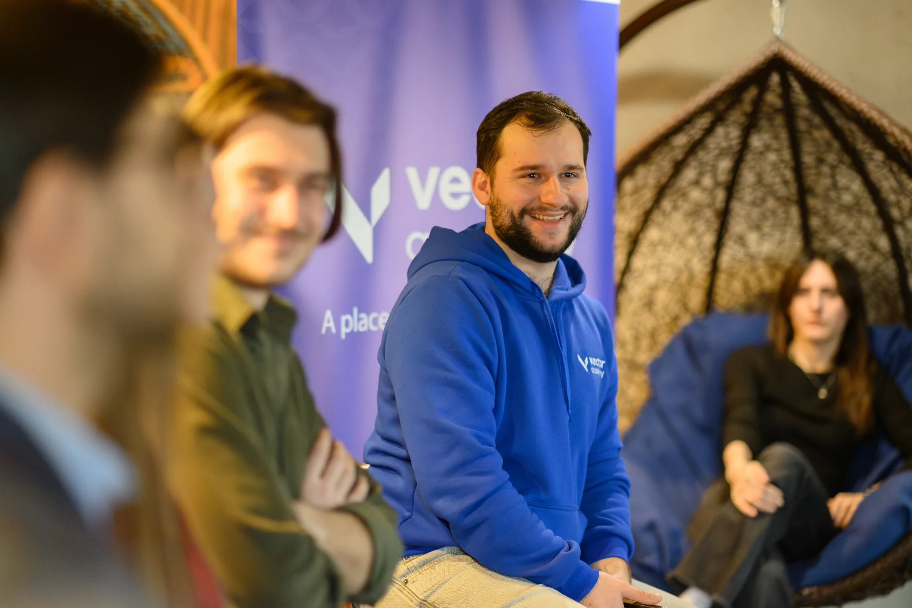

[01]
Branding
Branding
Identitate vizuale
Identitatea vizuală nu este doar cum arată un brand, ci cum se simte. Creez sisteme vizuale care au sens, direcție și autenticitate.
1 / 1
Nu știi de unde să începi?
Te ghidez eu, de la idee
la un rezultat care merită.
Sunt Diana Tatar, designer grafic și AI content creator / mentor la Vector Academy. De 6 ani construiesc identități vizuale și campanii — peste 10 brand-uri dezvoltate și 200+ clienți cu care am colaborat la branding, social media, editorial și conținut AI.
Descarcă CV2025
Identitatea vizuală nu este doar cum arată un brand, ci cum se simte. Creez sisteme vizuale care au sens, direcție și autenticitate.
Transform pagini de social media în spații vizuale coerente, unde fiecare element contribuie la o imagine clară și memorabilă.
Creez materiale editoriale și de print cu layout-uri clare și bine structurate, unde textul și vizualul lucrează împreună pentru o comunicare eficientă.
Dezvolt concepte vizuale pentru campanii, pornind de la idee și direcție creativă, până la moodboard și ghid clar pentru implementare.
Creez conținut vizual static și video cu ajutorul AI, de la concepte creative până la materiale gata de utilizat în campanii și social media.
[01]
Derulează ca să vezi fiecare client — fotografia activă devine color, celelalte rămân alb-negru.

Colaborarea a fost foarte clară și bine structurată. Am venit fără o direcție exactă, iar rezultatul final a depășit așteptările. Designul este coerent și transmite exact ce aveam nevoie.Dumitru Vlahfounder Vector Academy
Testimonial placeholder — va fi înlocuit după colectarea feedback-ului.Nume, prenumeFuncție, companie
Testimonial placeholder — va fi înlocuit după colectarea feedback-ului.Nume, prenumeFuncție, companie
Companiile cu care am lucrat